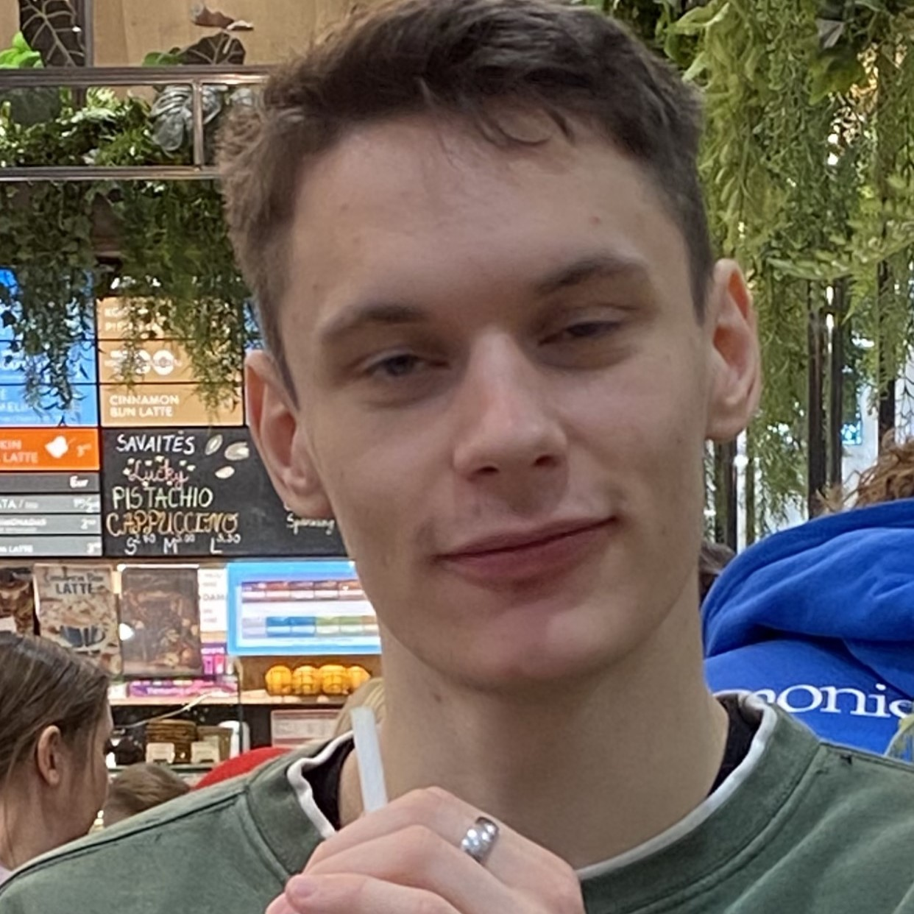

Esu Adomas Kalašnikovas, Vilnius Tech studentas, NKKM kompiuterių mokyklos mokytojas.
Pasižymiu atkaklumu, aukštumų siekiu, tad minimumas - ne rodiklis. Turiu patirties įvairiuose sektoriuose,
nuo gamybos iki informacinių technologijų. Ši patirtis man leidžia suprasti projektų pagrindinį tikslą
daug greičiau, taip pat padeda siekiant juos optimizuoti ir nešališkai analizuoti jų naudą ar žalą.
|  |
Gabumai:
|
Nuo mažens pasižymėjau smalsumu ir žingeidumu. Laikui bėgant šie požymiai pasireiškė mano susidomėjimu elektronika
ir įvairiomis kompiuterizuotomis sistemomis. Nuo įvairių elektroninių menkniekių ardymo iki audio sistemų instaliacijos
savo bei draugų automobiliuose, mano praktinės žinios šioje srityje tik augo, o smalsumas išaugo į norą sužinoti kaip veikia
kiekvienas komponentas ir detalė.
Besimokydamas aštuntoje klasėje jau be abejonės žinojau kuria kryptimi keliausiu pabaigęs gimnaziją. Ši kryptis buvo
Elektronikos Inžinerija. Žinoma, ne viskas buvo rožėmis klota. Pirmame kurse susidūriau su sveikatos problemomis, kurios
prikaustė mane prie lovos didžiąjai dienos daliai. Tai gerokai atsiliepė ir mano studijoms. Buvau privestas pusmečiui pasitraukti
iš mokomojo proceso.
Laimei, turėdamas daugiau laisvo laiko, galėjau daugiau dėmesio sutelti sveikatai. Šis dėmesys gerokai atsipirko, nes į studijas grižau
jau praktiškai pilnaverčiu ir žinių išsiilgusiu studentu. Šiuo metu išnaudoju savo kompiuterines žinias mokydamas kompiuterių mokykloje.
Šis darbas leidžia ne tik tobulėti komunikacijos ir viešo kalbėjimo srityse, tačiau ir gerokai gilina mano žinias ne tik apie kompiuterius,
bet ir sofistikuotas elektronikos sistemas, kurios priverčia juos "tiksėti".
Mano gyvenimo moto:"Tobulėjimui ribų nėra!"